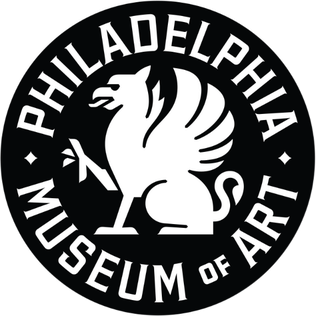

홈 > 브랜드 매거진 > The Met
The Met
The Met는 2016년에 기록된 Museums, Galleries & Libraries 계열의 브랜드 아이덴티티 사례입니다. Wolff Olins가 아이덴티티 작업의 디자이너로 기록되어 있습니다. 로고, 타입, 컬러, 아트 디렉션, 애플리케이션 섹션으로 구성된 시각 시스템입니다.
산업 분야 미디어·엔터테인먼트 · 공개 등급 편집 검수 · 브랜드 평가 4 ★
Th
The Met
한눈에 보는 브랜드
브랜드 관점
공개 메타데이터와 에셋 요약을 기준으로 아이덴티티 구조를 확인할 수 있습니다.
시작과 성장
메트로폴리탄 미술관은 1870년 뉴욕에서 사업가·금융인·예술가들이 미국 대중에게 예술과 예술 교육을 제공하려는 취지로 설립했다. 같은 해 4월 13일 법인으로 출범해 5번가 도드워스 빌딩에서 개관했고, 첫 소장품은 로마 석관이었다.
1902년에는 건축가이자 창립 이사인 리처드 모리스 헌트가 설계한 보자르 양식의 5번가 파사드와 그레이트 홀이 공개됐다. 디자인 아카이브 맥락에서 주목할 전환점은 2016년이다.
영국 스튜디오 울프 올린스가 미술관 디자인 책임자 수전 셀러스를 포함한 내부 팀과 약 2년 반에 걸쳐 협업해 새 브랜드 아이덴티티를 만들었고, 정식 명칭 대신 사람들이 실제로 부르는 애칭 ‘더 멧(The Met)’을 전면에 내세웠다. 2016년 2월 공개돼 3월 1일 본격 적용됐으며, 위성관 멧 브로이어 개관에 맞춘 시점이었다.
제품과 서비스
2016년 아이덴티티의 핵심은 ‘The Met’ 두 단어를 위아래로 쌓고 각 단어 안의 글자들을 서로 맞붙여 겹쳐 짠 진홍색 로고타입이다. 영국 타입 디자이너 개러스 헤이그와 함께 제작했고, 세리프와 산세리프, 캘리그래피 요소를 한데 섞어 고전과 현대를 의도적으로 결합했다.
폰트·컬러·그래픽 장식·이미지 처리·소재·구성을 아우르는 시스템으로 인쇄·디지털·전시 공간 전반에 적용됐다. ‘life to art, art to life’라는 모토 아래 기존의 배타적 인상을 덜어내고 더 친근하게 다가가려는 방향이었다.
사람들
현재 상태
공개 직후 큰 논쟁을 불렀다. 뉴욕 매거진 건축 비평가 저스틴 데이비드슨은 ‘타이포그래피 버스 충돌’이라 혹평했고, 글자들이 서로 등을 떠미는 빨간 이층버스에 비유한 비판도 있었다.
반면 고서미스트는 로버트 인디애나의 ‘LOVE’ 조형을 떠올리게 한다며 옹호하는 등 평가가 양분됐다. 이 겹친 진홍색 로고타입은 이후로도 미술관의 시각 정체성으로 사용되고 있다.
타임라인
BI/CI 변천사
확인된 BI/CI 이미지가 아직 없습니다.
함께 읽을 브랜드
Ar
Art Museum
미디어·엔터테인먼트 · 편집 검수Art MuseumArt Museum는 2016년에 기록된 Museums, Galleries & Libraries 계열의 브랜드 아이덴티티 사례입니다. Underline Studio가...
So
Somerset House
미디어·엔터테인먼트 · 편집 검수Somerset HouseSomerset House는 2025년에 기록된 Museums, Galleries & Libraries 계열의 브랜드 아이덴티티 사례입니다. North가 아이덴티티...
Vi
Vitenskapsmuseet
미디어·엔터테인먼트 · 편집 검수VitenskapsmuseetVitenskapsmuseet는 2024년에 기록된 Museums, Galleries & Libraries 계열의 브랜드 아이덴티티 사례입니다. Try가 아이덴티티...
 브랜드·비즈니스 · 편집 검수Time
브랜드·비즈니스 · 편집 검수TimeTime는 2023년에 기록된 Designed by For the People 계열의 브랜드 아이덴티티 사례입니다. For The People가 아이덴티티 작업의 디...
He
Helsinki City Museum
미디어·엔터테인먼트 · 편집 검수Helsinki City MuseumHelsinki City Museum는 2016년에 기록된 Designed by Werklig 계열의 브랜드 아이덴티티 사례입니다. Werklig가 아이덴티티 작업의...

미디어·엔터테인먼트 · 편집 검수Philadelphia Art MuseumPhiladelphia Art Museum는 2025년에 기록된 Designed by Gretel 계열의 브랜드 아이덴티티 사례입니다. Gretel가 아이덴티티 작업...
Be
Beams
미디어·엔터테인먼트 · 편집 검수BeamsBeams는 2023년에 기록된 Sound 계열의 브랜드 아이덴티티 사례입니다. Only가 아이덴티티 작업의 디자이너로 기록되어 있습니다. 로고, 타입, 컬러, 아트...
 미디어·엔터테인먼트 · 편집 검수Expo '74
미디어·엔터테인먼트 · 편집 검수Expo '74Expo '74는 1972년에 기록된 World Expos 계열의 브랜드 아이덴티티 사례입니다. Lloyd L. Carson가 아이덴티티 작업의 디자이너로 기록되어...